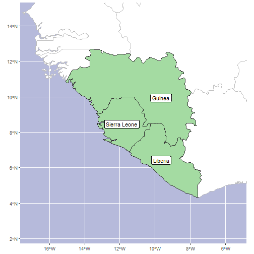

Generating custom checklists with rWCVP
Matilda Brown
24/05/2022
Source:vignettes/articles/custom-checklist.Rmd
custom-checklist.RmdAs well as allowing users to create checklists from the World Checklist of Vascular Plants (WCVP), rWCVP provides functionality for modifying a checklist output to generate a customised report. I’ll demonstrate this here by generating a list of species that are endemic (or near-endemic) to Sierra Leone.
In addition to rWCVP, we’ll use the
tidyverse packages for data manipulation and plotting, the
gt package for rendering nice tables, and the
sdpep package to find bordering regions.
In this example we use the pipe operator
(%>%),dplyr and ggplot - if
these are unfamiliar we’d suggest checking out https://tidyverse.org/ and
some of the help pages therein, or this code might be difficult to
interpret.
Now, let’s get started!
A checklist of endemic species
We start by generating a checklist of the species that occur in
Sierra Leone. Remembering and/or finding the appropriate WGSRPD Level 3
codes is a pain, so we can use
get_wgsrpd3_codes("Sierra Leone") to do that work for us in
the function call.
sl_code <- get_wgsrpd3_codes("Sierra Leone")
#> i Matches to input geography found at Area (Level 3) and Country (Gallagher)
sl_species <- wcvp_checklist(area=sl_code, synonyms = FALSE)
#> i No taxon specified. Generating checklist for all species.
#> i Generating a checklist of accepted species names only. Use `synonyms = TRUE` to include all namesHow many species occur in Sierra Leone, and how many are endemic? We
can use the endemic column here, so it’s really simple.
#enclosed in parentheses so that the output is printed as well as assigned
(endemic_summary <- sl_species %>%
distinct(taxon_name, endemic) %>%
group_by(endemic) %>%
summarise(number.of.sp = n()))
#> # A tibble: 2 x 2
#> endemic number.of.sp
#> <lgl> <int>
#> 1 FALSE 3303
#> 2 TRUE 45Easy! For a list of endemic species, we can simply filter our
checklist using the endemic column, but what about
near-endemics?
A checklist of near-endemic species
Depending on how we define near-endemics, there are two ways we can approach the filtering step.
- We define near-endemics as those species that occur in Sierra Leone
and one other WGSPRD3 Area (L3). From a data perspective, this means
filtering out species that have >2 rows in
sl_species(because each row is a species-area occurrence). - Alternatively, we can consider near-endemics as those species that might occur across a border, so are functionally endemic. To do this, we need to a) identify the neighbouring WGSPRD3 Areas and b) filter our species list accordingly.
1. Species in Sierra Leone plus 1 other area
We can just directly remove any species from our list of species from Sierra Leone that occur in more than 2 areas.
2. Species in Sierra Leone and neighbouring areas
First, we need to identify which WGSRPD Areas share a border with Sierra Leone.
We could do this by looking at a map, but we’ll do this programmitically using the shape files.
To do so, we take the WGSRPD level 3 polygons and find all the areas that border each other.
Note, we had to turn off spherical coordinates in
sf for this using
sf_use_s2(FALSE).
Now we have a list of neighbouring areas, we need to find the ones that border Sierra Leone.
#which polygon/s is/are Sierra Leone?
sl_index <- which(area_polygons$LEVEL3_COD %in% sl_code)
#find neighbouring polygons
sl_neighbours_index <- area_neighbours[[sl_index]]
#get the polygons for Sierra Leone plus its neighbours
sl_plus_neighbours <- area_polygons[c(sl_index, sl_neighbours_index),]We can map the region to sanity-check this automated neighbour detection before we generate our final checklist.
#get a sensible bounding box for our plot
bounding_box <- st_bbox(sl_plus_neighbours)
xmin <- bounding_box["xmin"] - 2
xmax <- bounding_box["xmax"] + 2
ymin <- bounding_box["ymin"] - 2
ymax <- bounding_box["ymax"] + 2
#plot the map
ggplot(area_polygons) +
#world polygons first, for context
geom_sf(fill="white", colour="grey") +
#add polygons of interest
geom_sf(data=sl_plus_neighbours, fill="#a4dba2", colour="gray20")+
#bounding box we sey up above
coord_sf(xlim=c(xmin, xmax), ylim=c(ymin, ymax))+
#add country name labels
geom_sf_label(data=sl_plus_neighbours,aes(label=sl_plus_neighbours$LEVEL3_NAM))+
#add ocean background
theme(panel.background = element_rect(fill="#b6badb")) +
#remove x and y from axes
xlab(NULL) +
ylab(NULL)
Of course, we could have just identified Guinea and Liberia as
neighbouring countries from a map, then found the codes using
get_wgsrpd3_codes("Liberia") and
get_wgsrpd3_codes("Guinea"), but that’s not nearly as much
fun!
Next, we can identify near-endemics as those species that only have occurrences in Sierra Leone, Guinea or Liberia.
sl_near_endemics2 <- sl_species %>%
# filtering for each species
group_by(plant_name_id) %>%
# only keep those where all points are in the threee countries
filter(all(area_code_l3 %in% sl_plus_neighbours$LEVEL3_COD)) %>%
ungroup()And finally we filter our list to only species that occur in Sierra Leone + one neighbour, like we did in Option 1. Looking at the map it seems plausible that a species could occur right at the triple junction between the three countries, but for this example we will exclude those species.
Creating our formatted report
Now we can do something a bit fancy - turn our checklist data frame
into a formatted report. To do this, we plug it into a template file
called “custom_checklist.Rmd” that is stored in the rWCVP
package folder (specifically, the “rmd” subfolder). We pass the data (as
well as some other information) using params, and need to
specify a file name using output_file.
library(rmarkdown)
#informative test to include in our html
checklist_description <- "Checklist of species that are endemic to Sierra Leone (or near-endemic, based on neighbouring countries)"
#for file saving
wd <- getwd()
#do the rendering
render(system.file("rmd", "custom_checklist.Rmd", package = "rWCVP"),
quiet = TRUE,
params=list( version = "New Phytologist Special Issue",
mydata = sl_nearendemics2,
description = checklist_description),
output_file = paste0(wd,"/Sierra_Leone_endemics_and_near_endemics.html"))And here is our file (screenshot here, because the report has left the building)!
example report